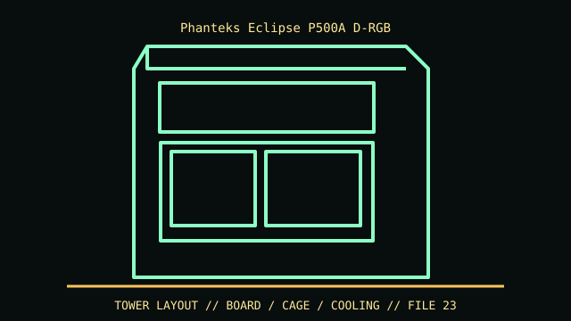

[ IDENTIFIED ENCLOSURE // ECLIPSE P500A D-RGB (PH-EC500ATG_DWT01/DBK01 FAMILY) ]
Phanteks Eclipse P500A D-RGB
510 × 240 × 505 mm (H × W × D); GPU clearance up to 435 mm, CPU cooler 190 mm; radiator length changes card clearance.

VARIANT / ARCHIVAL CAVEAT: D-RGB, non-RGB and later G500/P500A variants differ in fans/I/O. Confirm rear product code, mesh panel and optional drive-bracket inventory.
Mechanical specifications and fit
| Catalog identity | Eclipse P500A D-RGB (PH-EC500ATG_DWT01/DBK01 family) |
|---|---|
| Dimensions and clearances | 510 × 240 × 505 mm (H × W × D); GPU clearance up to 435 mm, CPU cooler 190 mm; radiator length changes card clearance. |
| Drive bays / mounts | Two included 3.5/2.5-inch combo brackets; expand to ten 3.5-inch positions using optional brackets, plus optional 2.5-inch mounts. |
| Board, system and compatibility | E-ATX up to 280 mm, ATX/mATX/Mini-ITX; 7 standard plus 3 vertical slots, with riser optional. |
| Revision / identification | D-RGB, non-RGB and later G500/P500A variants differ in fans/I/O. Confirm rear product code, mesh panel and optional drive-bracket inventory. |
Preservation and installation notes
D-RGB, non-RGB and later G500/P500A variants differ in fans/I/O. Confirm rear product code, mesh panel and optional drive-bracket inventory.
E-ATX up to 280 mm, ATX/mATX/Mini-ITX; 7 standard plus 3 vertical slots, with riser optional.
- Capture the complete model/SKU, serial/date label, board assembly and bay/backplane/riser identifiers before disassembly; keep matched screws, trays, carriers, feet and cables with the case.
- Check the cited manual's specific build option before transferring hardware. Published maximum GPU, drive, fan or radiator capacity may not be simultaneous when a removable cage or alternative riser occupies that volume.
- For rack and vintage systems, preserve the exact rails, shields, doors, brackets and model-specific safety instructions; do not infer compatibility from a familiar brand or physical connector shape.
Manufacturer manuals and archival sources
- Phanteks Eclipse P500A D-RGB specificationsPrimary manufacturer or model-specific technical/manual reference used for the identification and mechanical data above.
- Phanteks Eclipse P500A product referenceSecond product manual, manufacturer resource or established technical archive; choose the exact regional SKU and revision.
When exact dimensions depend on configuration, the text says so; verify the measured specimen before making a fit or restoration decision.